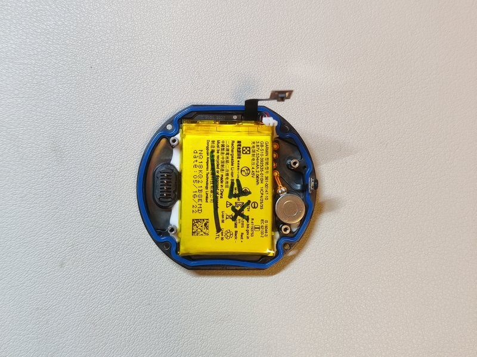

配图

iFixit：把后盖密封圈按回机身底部的槽内

iFixit：拆下后盖后的电池与机身
图片版权归原作者所有，仅作个人学习收藏；出处见文末「来源与核实记录」。
结构原理
本节数字只写来源里给出的；来源没有就写「来源未给出」。
堆叠方案
方向：从表盘正面到背面
| 层级 | 零件 | 材料 | 厚度/尺寸 | 固定方式 | 依据 |
|---|---|---|---|---|---|
| L1 | 屏幕总成 | 来源未给出 | 来源未给出 | 4 颗 T4 Torx 螺丝 | Step 2 |
| G1 | 屏幕总成密封圈 | 橡胶 | 来源未给出 | 压入屏幕总成底面的槽 | Step 10 |
| L2 | 主电路板 | — | 来源未给出 | 4 颗 T4 Torx 螺丝 + 排线 | Step 4 |
| L3 | 扬声器 + 固定夹 | — | 来源未给出 | 螺丝固定的夹片 | Step 6 |
| L4 | 电池 | — | 来源未给出 | 带部分胶（后盖上有胶） | Step 7 |
| G2 | 后盖密封圈 | 橡胶 | 来源未给出 | 压入机身底部的槽，非对称需对准方向 | Step 9 |
| L5 | 后盖 | 来源未给出 | 来源未给出 | 4 颗 T4 Torx 螺丝 | Step 1 |
剖面示意：
flowchart TB N0["屏幕总成"] N1["屏幕密封圈(槽内)"] N2["主板"] N3["扬声器+固定夹"] N4["电池"] N5["后盖密封圈(槽内)"] N6["后盖"] N0 --> N1 --> N2 --> N3 --> N4 --> N5 --> N6
零件清单
| 零件 | 数量 | 功能 | 材料 | 依据 |
|---|---|---|---|---|
| T4 Torx 螺丝 | 后盖 4 + 屏幕 4 + 主板 4 + 扬声器夹 若干 | 紧固并压缩密封圈 | 钢（来源未写明） | Step 1/2/4/6 |
| 后盖密封圈 | 1 | 后盖与机身之间密封 | 橡胶 | Step 9 |
| 屏幕总成密封圈 | 1 | 屏幕与机身之间密封 | 橡胶 | Step 10 |
| 扬声器固定夹 | 1 | 固定扬声器 | 来源未给出 | Step 6 |
装配顺序
- 把后盖密封圈按方向压入机身底部槽内（非对称，需对准）
- 装电池、扬声器与固定夹，4 颗螺丝固定后盖
- 装主板（4 颗螺丝）并接排线
- 若屏幕密封圈脱落，压回屏幕总成底面槽内
- 接屏幕排线，4 颗螺丝固定屏幕总成
来源给出了拆解步骤及「重新安装密封圈」的装配注意事项。
受力与运动分析
- 受力路径：螺丝预紧力压缩槽内的橡胶密封圈形成密封（推断：来源只说用橡胶密封圈防水，未给压缩量）。
- 运动关系：无相对运动（静态密封）。
- 失效风险：密封圈可能粘在后盖上脱落或装反；作者提示无官方指导时不保证重装后仍防水。
设计要点与参数
| 要点 | 内容 | 依据 |
|---|---|---|
| 紧固件 | 全部为 T4 Torx | 页面说明 |
| 密封形式 | 橡胶密封圈 + 槽，非胶粘 | 页面说明 |
| 防水等级/槽深/压缩率 | 来源未给出 | — |
优缺点
优点
- 可拆可装，维修后有机会恢复防水
- 装配防错：非对称密封圈+槽只能一种方向装
缺点 / 代价
- 后盖仍有少量胶，拆卸需用力
- 依赖装配质量，用户自行维修难以验证密封
可借鉴点
- 小型穿戴设备也可以用「螺丝+密封圈」替代胶粘
- 密封圈做成非对称形状实现防呆
- 密封圈放在槽内，拆装时不易移位
相关案例
来源与核实记录
- 主来源：Garmin fēnix 7X Teardown（2023-01-04，Lawrence Lee（iFixit 社区））
- 核实：2026-11-13 通过 iFixit API 读取 10 步原文与页面说明，核对螺丝、密封圈位置与装配提示。